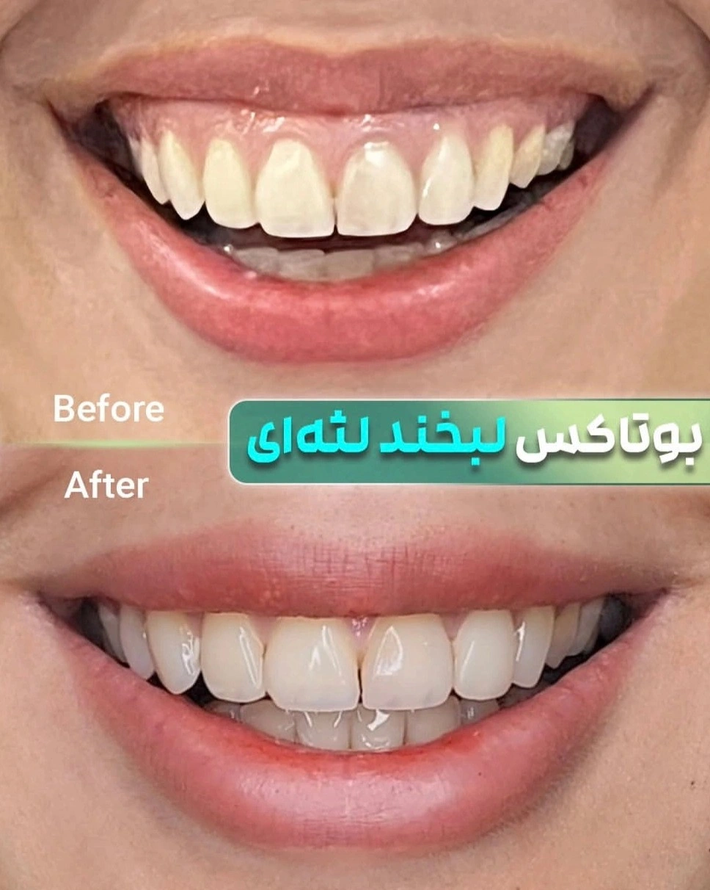

From Diagnosis to Treatment of Gummy Smile

The patient sits down in the chair and says that when they smile, too much gum shows. The first thing that comes to mind is how many millimeters it is. That's the right question, but it's the second question. The first question is why the gum is showing.
Treatment choice in a gummy smile depends on the cause, not the millimeter count. The millimeter count only determines how far each method can go. If the order of these two questions is reversed, the result is either undertreatment or overtreatment.
∆ First, Measure It Correctly
Many people skip this step carelessly, and then every number becomes meaningless.
In what state. Only in a full smile, not at rest. The problem is that when you tell a patient to smile, they usually clench their teeth together and give you a forced smile. You need to genuinely encourage them to laugh out loud. Another technique is having them say a drawn-out "E" sound while contracting the muscles, to bring out the maximum range of lip movement.
Above which tooth. The upper centrals. In the ideal smile, the upper lip sits exactly tangent to the gingival margin of the central incisor and canine. It's normal for the laterals and first premolars to show a bit more gum, and that shouldn't mislead you.
From where to where. From the free gingival margin (FGM) on the central incisor to the lower border of the upper lip, at the highest point of the smile.
The number. Per the Global Diagnosis book, more than 2mm means a gummy smile. Zero millimeters is the ideal state.
The number you see in journal articles isn't stricter — it's looser. Tatakis puts the threshold at more than 3mm, and Dym and Pierre consider more than 4mm unesthetic. The reason is clear: the book speaks from the standpoint of smile design and the esthetic ideal, while the articles speak from the standpoint of the threshold at which people actually find it unattractive. In practice, that means you don't act below 2mm, 2 to 4mm is a gray zone where the patient's own complaint is decisive, and above 4mm nearly everyone sees it as a problem.
You need one more number. Record the exposure at rest too — not for diagnosis, but to calculate lip mobility: smile exposure minus rest exposure. A normal lip rises 6 to 8mm. More than that means a hypermobile lip.
∆ Five Causes, Five Different Treatments
Global Diagnosis separates five distinct causes. This distinction matters because the treatment for each is completely different, and confusing them means an ineffective treatment.
∆ 1. A Hypermobile Upper Lip
The lip rises more than 6 to 8mm from rest to a full smile. Lip length is normal — only its range of motion is excessive. This is also the most common cause.
The primary treatment is Botox, followed by plastic surgery on the elevator muscles and smile-behavior modification.
What does the evidence tell us: Zengiski's meta-analysis of 17 studies shows an average reduction of about 3.42mm at the second week, effectiveness clearly up to about 4mm, and a return to near baseline around week 24. Fatani puts the duration at four to six months. That means repeat injection is the rule, not the exception.
If the patient wants a more durable solution, lip repositioning is the next option. The dos Santos-Pereira meta-analysis reports a reduction of 2.87mm at 3 months, 2.71mm at 6 months, and 2.10mm at 12 months — meaning about 25 percent relapse in the first year. Myotomy improves stability. In one randomized trial, a Botox injection one to two weeks before surgery significantly reduced relapse.
∆ 2. Altered Passive Eruption
The gum has not receded to its natural position and has stayed on the enamel. Two simple signs help you diagnose it: the centrals appear shorter than 10 to 11mm, and you can't reach the CEJ with a probe inside the gingival sulcus.
The treatment is esthetic crown lengthening. The alveolar bone needs to sit 2mm apical to the CEJ, and the gingival margin needs to stabilize 3mm coronal to the new bone.
Keep your expectations realistic. In one small study of six patients (Aroni et al.), crown length increased by an average of 1.6mm, and that same amount remained stable at 12 months. That means if a patient shows 5mm of gum, this method alone won't get them to zero.
One note: the 1.6mm figure comes from six patients, so it isn't a precise number. Its direction is reliable (a limited, stable correction), but it shouldn't be quoted as if it were a definitive figure.
One important warning: Fatani states explicitly that a Botox injection is not acceptable for a patient whose exposure is caused by a short crown. This is the most common mistake in this area.
∆ 3. Vertical Maxillary Excess
Here the problem is neither in the gum nor in the lip — it's in the maxillary bone itself, which has grown excessively in the vertical dimension. Two signs help you diagnose it: the lower third of the face is longer than the middle third, and the patient shows excessive gum not just in front when smiling, but in the back of the mouth too.
This is the only cause that can't be corrected by working on the gum or the lip. No matter how much Botox you inject or how much crown-lengthening surgery you do, the jaw stays where it is.
The real solution is orthognathic surgery. In simple terms, the surgeon raises the upper jaw and fixes it in place. Khojasteh and Mohaghegh also consider this the best option for moderate and severe cases.
Two practical points for you as the referring dentist. First, the amount the jaw can be raised isn't unlimited, and one of its limits is a change in nasal shape, so if the patient expects the gum display to reach zero entirely, they may not get there. Second, this surgery is usually paired with orthodontics, so refer earlier rather than after trying other treatments first.
If the patient won't accept surgery, Global Diagnosis proposes Botox as a secondary treatment, for masking. We address this separately below.
∆ 4. A Short Upper Lip
The average upper lip length in young women is 20 to 22mm, and in young men 22 to 24mm. Shorter than that means the gum shows excessively when smiling, even when lip movement is completely normal.
Take this point seriously, because from the outside it looks like a hypermobile lip, but it isn't. The difference shows up with a ruler: in a short lip, lip length is reduced, but its mobility stays within the 6 to 8mm range.
The treatment is Botox or filler, along with training the patient to consciously control their smile in front of a mirror.
∆ 5. Dentoalveolar Extrusion
The teeth — usually due to wear or a missing opposing tooth — have erupted excessively and pulled the bone and gum down with them. The result is an asymmetric gum line, and that asymmetry is usually the first diagnostic clue.
The treatment is orthodontic intrusion. If there's also severe wear, functional crown lengthening or raising the vertical dimension of occlusion becomes necessary.
∆ A Single-Cause Case Is Rare
These five causes often occur together. Peck and colleagues showed in 1992 that a gummy smile is associated with excessive vertical growth of the anterior maxilla, along with above-average muscular strength in raising the lip.
The practical takeaway is to check all five in the exam, even when one is obvious. If you only see the dominant cause and treat that alone, the patient gets partial improvement, and you won't understand why the result wasn't complete.
∆ The Patient Who Isn't a Candidate for Jaw Surgery
The patient has vertical maxillary excess, but surgery isn't possible for them. Either they don't want it, or they can't afford it, or their medical condition or age doesn't allow it. Is doing Botox and accepting a partial, temporary improvement a mistake?
No — and Global Diagnosis itself proposes exactly this as a secondary treatment. But there are three things you need to make explicit with the patient.
The difference between treatment and masking. Treatment means removing the cause, which here is only possible with surgery. Masking means reducing the appearance of the problem without touching the cause. In this patient, Botox is masking. If you don't make that clear, the patient will think they've been treated, and six months later will feel you've failed them.
A realistic ceiling. When baseline exposure is 8mm, a 3mm reduction is numerically good, but the patient may still perceive themselves as having a gummy smile. Dissatisfaction in this group comes more from a mismatched expectation than from the treatment itself. A before-treatment photo and a documented measurement are the best tools for managing that expectation.
Don't raise the dose. Compensating for insufficient effect with a higher dose ends in an unnatural smile, asymmetry, and lip ptosis. Fatani identifies overdose as a cause of ptosis and of teeth being covered during a smile. You can't shift the biological ceiling with dose.
One honest note: no study was found that specifically examined Botox in patients with vertical maxillary excess who aren't surgical candidates. The closest thing is Romanos's 18-month case series of twelve multifactorial patients with an average exposure of 5.3mm who weren't orthognathic candidates and were treated with a combination of crown lengthening, Botox, and lip filler. But the etiology in those patients was passive eruption plus a hyperactive lip, not a skeletal cause, and the study had no control group. So this approach has conceptual support, but not yet trial-level evidence.
∆ Summary
Measure on a full, genuine smile, from the free gingival margin of the central incisor to the lower border of the upper lip. More than 2mm means a gummy smile, and above 4mm means nearly everyone sees it as a problem.
Record the exposure at rest too, so you can calculate lip mobility. 6 to 8mm is normal.
- Check all five causes, not just the dominant one.
- Botox offers the best effect-to-invasiveness ratio for a hypermobile lip and exposure up to about 4mm, provided its temporary nature is accepted. It has no place at all for a short crown.
- Crown lengthening for altered passive eruption, with an expected gain of about 1.5 to 2mm.
- Lip repositioning is the intermediate option for a hypermobile lip, with about 25 percent relapse in the first year.
- Orthognathic surgery is the only causal treatment for vertical maxillary excess. If it isn't possible, Botox is acceptable as masking, provided the patient is also told it is masking.
- Don't ignore an asymmetric gum line. It usually means extrusion, and its treatment is orthodontic, not periodontal.
∆ References
- Global Diagnosis book
- Tatakis DN. From etiology to intervention: 50 years of progress in gummy smile research and treatment. J Indian Soc Periodontol. 2025.
- Dym H, Pierre R. Diagnosis and Treatment Approaches to a "Gummy Smile". Dent Clin North Am. 2020.
- Peck S, Peck L, Kataja M. The gingival smile line. Angle Orthod. 1992.
- Zengiski ACS, et al. Effect and longevity of botulinum toxin in the treatment of gummy smile: a meta-analysis and meta-regression. Clin Oral Investig. 2022.
- Fatani B. An Approach for Gummy Smile Treatment Using Botulinum Toxin A: A Narrative Review of the Literature. Cureus. 2023.
- Tatakis DN, Silva CO. Contemporary treatment techniques for excessive gingival display caused by altered passive eruption or lip hypermobility. J Dent. 2023.
- dos Santos-Pereira SA, et al. Effectiveness of lip repositioning surgeries in the treatment of excessive gingival display: A systematic review and meta-analysis. J Esthet Restor Dent. 2021.
- Ghoniem OM, Madkor GG, Darhous MS. Evaluating Lip Repositioning for the Treatment of Excess Gingival Display with and without Pretreatment with Botox: A Randomized Clinical Trial. J Contemp Dent Pract. 2025.
- Khojasteh A, Mohaghegh S. Orthognathic Surgery for Management of Gummy Smile. Dent Clin North Am. 2022.
- Romanos A, et al. The Combo Strategy: Triple Approach for Gummy Smile, 18-Month Case Series. J Esthet Restor Dent. 2026.
- Kim H, Kim S, Cho YD. Pink esthetic treatment of gingival recession, black triangle, and gummy smile: a narrative review. Maxillofac Plast Reconstr Surg. 2025.
- Aroni MAT, et al. Esthetic crown lengthening in the treatment of gummy smile. Int J Esthet Dent. 2019. PMID: 31549103
- Dawadi A, Humagain M, Lamichhane S, Sapkota B. Clinical and psychological impact of lip repositioning surgery in the management of excessive gingival display. Saudi Dent J. 2024.